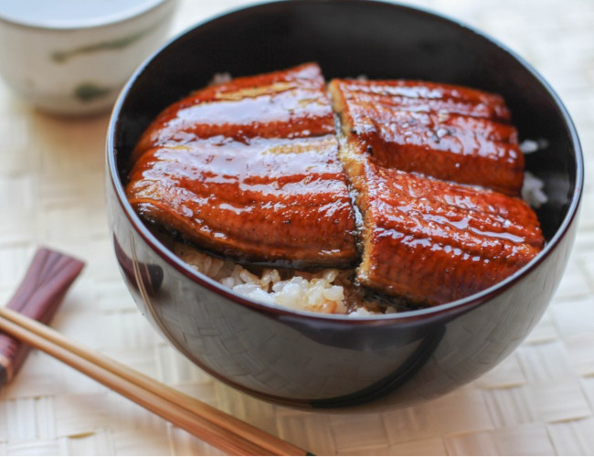

Unadon
Top Page

Description
Unadon (Grilled Eel Rice Bowl) is a popular Japanese delicacy that you can easily make at home for lunch or dinner. This delicious unagi bowl features perfectly grilled eel fillets glazed with my homemade unagi sauce and nestled on a bed of hot steamed rice. The tantalizing aroma of the sweet caramelized glaze is enough to make your mouth water!
Ingredients
- Unagi (Eel) fillets
- Unagi - Shop bought or homemade
- Freshly steamed, Japanese short-grain rice
Steps
- Prepare the homemade eel sauce (if making your own).
- Broil eel fillets and brush the eel sauce right before taking them out.
- Serve rice in a large rice bowl (donburi), brush with sauce, and serve eel fillets on top.